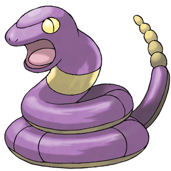
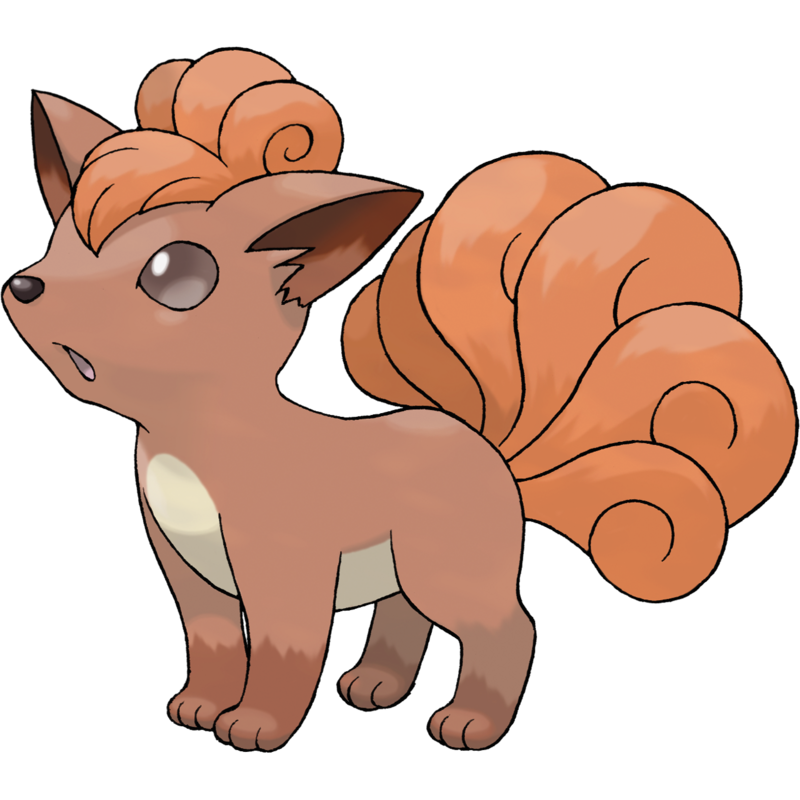

Vi dico qualcosa in più sui Pokémon.
Nel cartone animato questi animaletti vengono catturati e allenati da degli umani, che poi li usano uno contro l'altro in tornei, per poter vincere delle medaglie.
Ci sono vari tipi di Pokémon: d'aria, d'acqua, di terra, magnetici, ... .
I Pokémon preferiti di Cristian sono i seguenti:
Charmender
Pidgey

Ekans 
Vulpix 
Jigglypuff